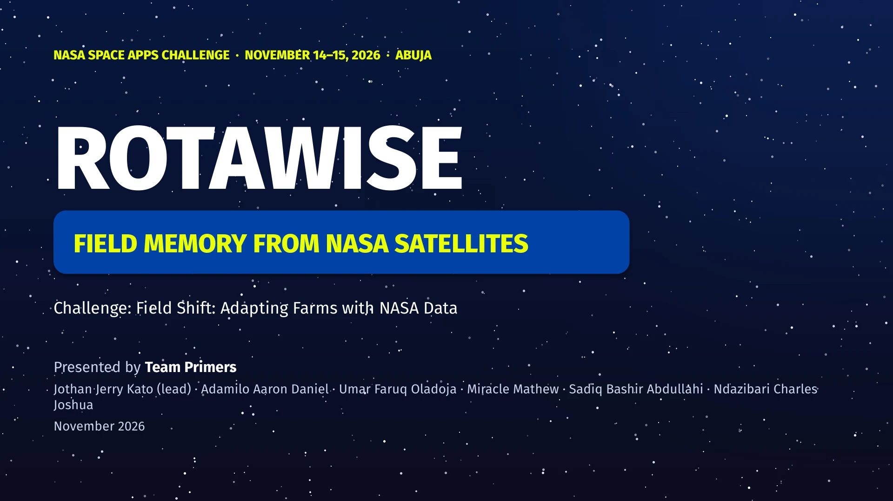

![THE PROBLEM · SAME FIELD, SAME CROP, SEASON AFTER SEASON · 02 / 07 · Savanna smallholders plant maize on the same land year after year. The soil tires, Striga weed spreads and fertilizer keeps getting dearer. Extension advice is generic, agents are too few, and no one tells the farmer what to change on their own plot. · <2 t/ha · Mean maize yield in the Guinea savanna · 70–100% · Crop losses farmers report from Striga · ₦50,000+ · One 50 kg bag of urea · Who it hurts most: smallholders on 0.5 to 2 hectares in the northern and middle belt savanna, most with a basic phone and no data. · Sources: Heliyon 2022 · Striga farmer surveys, northern Nigeria · market reports 2025–26](slides/2.webp)
![KEY INSIGHT · OUR SOLUTION · SATELLITES ALREADY REMEMBER EVERY SEASON · 03 / 07 · Farmers rarely keep records, but NASA has watched each field every few days for years. Rotawise turns that memory into one rotation choice the farmer can act on. · 01 · Field memory · Each season since 2020 read as cereal like, legume like or bare, with a confidence score. · NASA HLS · 02 · Soil fatigue · A 0 to 100 score from the cereal run, the greenness trend and soil carbon, nitrogen and pH. · NASA HLS · SoilGrids · 03 · Climate test · Rain onset, dry spells and heat today, and rain and hot days projected for the 2040s. · NASA POWER · NEX-GDDP-CMIP6 · 04 · Rotation choice · The current rotation against four others, with reasons, evidence, naira, gaps and risks. · Nigerian field trials](slides/3.webp)
![THE EXPERIENCE · ONE CLEAR ANSWER, ON ANY PHONE · 04 / 07 · BEFORE · Malam Musa in Zaria plans maize again, the fourth season in a row. · DURING · He dials the short code, picks Hausa and his farm, and gets the reply in seconds. · AFTER · His extension officer sees the same plan on the dashboard map and checks seed and soil phosphorus with him. · Farmer name is illustrative · live at rotawise-five.vercel.app · USSD · ROTAWISE · Plant SOYBEAN next season, then maize. Saves 0.6-2.4 bags urea/ha (N30-N120k). Cuts Striga up to 76%. Confirm with your extension agent. · Live reply · Zaria pilot farm · urea ₦50,000/bag](slides/4.webp)
![INCLUSIVE BY DESIGN · BUILT FOR THE FARMER MOST TOOLS LEAVE OUT · 05 / 07 · Who could be excluded | The barrier | What we designed differently | How we validate · Farmers with basic phones | No smartphone, no data | USSD on any phone, replies under 182 characters | Field test in five LGAs · Farmers who don't read English | Language | Hausa and English now, Hausa voice next | Native speaker review of every message · Women and tenant farmers | No land papers or records | Plot history read from orbit, nothing to fill in | Pilot with women's cooperatives · Farmers on tiny mixed plots | 30 m pixels can misread | A confidence score on every season; the farmer confirms | Test against labelled fields · Free to the farmer · no app download · no sign up](slides/5.webp)
![IMPACT · FEASIBILITY · A LEGUME BREAK PAYS THE FARMER BACK · 06 / 07 · 2.4 bags · Urea saved per hectare when soybean comes before maize, about ₦120,000 · +68% · Maize yield after soybean vs continuous maize · −76% · Striga after two legume seasons · Upper values, northern Guinea savanna · NJSER 2008 · Yusuf et al. 2009 · Kureh et al. 2006 · REAL NASA DATA · 5 PILOT FARMS · Farm | Cereal run | Fatigue | Advice · Zaria | 3 | 52 | Maize → Soybean · Dawakin Tofa | 4 | 60 | Sorghum → Cowpea · Bida | mixed | 53 | Maize → Soybean · Bokkos | 4 | 57 | Maize → Soybean · Gwagwalada | 4 | 58 | Maize → Soybean · Success looks like · Farmers switching to a legume, urea bags saved, yield and Striga checked each season. · Feasible · Open NASA data, no hardware, already live. Partners: ADP extension services, cooperatives, a USSD aggregator. · Risks · Pixel limits on tiny plots, price swings, trust. Handled with confidence scores, editable prices and agent sign off.](slides/6.webp)
![PROTOTYPE · NEXT STEPS · THE ASK · WORKING TODAY ON REAL NASA DATA · 07 / 07 · Built and tested · Live dashboard, USSD in Hausa and English, open API. 1,824 satellite readings across five pilot farms. · Next · Check readings against labelled fields, pilot in five LGAs, add Hausa voice, Yoruba and Igbo. · The ask · Pilot access through state ADPs and cooperatives, labelled field data for testing, and a USSD short code partner. · Thank you · rotawise-five.vercel.app · github.com/Jothankato05/Rotawise](slides/7.webp)